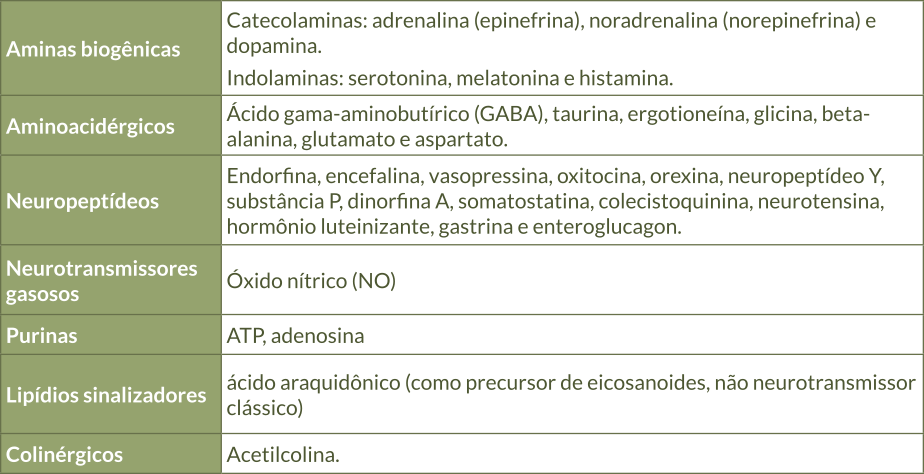

Cada neurotransmissor produz um efeito ao se ligar a proteínas (receptores) nas células-alvo. Os diversos tipos de neurotransmissores provocam reações diferentes dependendo do estímulo recebido e do local onde se localiza o neurônio. Os neurotransmissores podem ser excitatórios, aumentando a propagação de informações pelos neurônios; inibitórios, reduzindo essa propagação; ou moduladores, agindo de forma variável. O Quadro 1 lista alguns dos principais neurotransmissores.
Quadro 1 - Principais neurotransmissores.

Fonte: Hall; Hall, 2021.